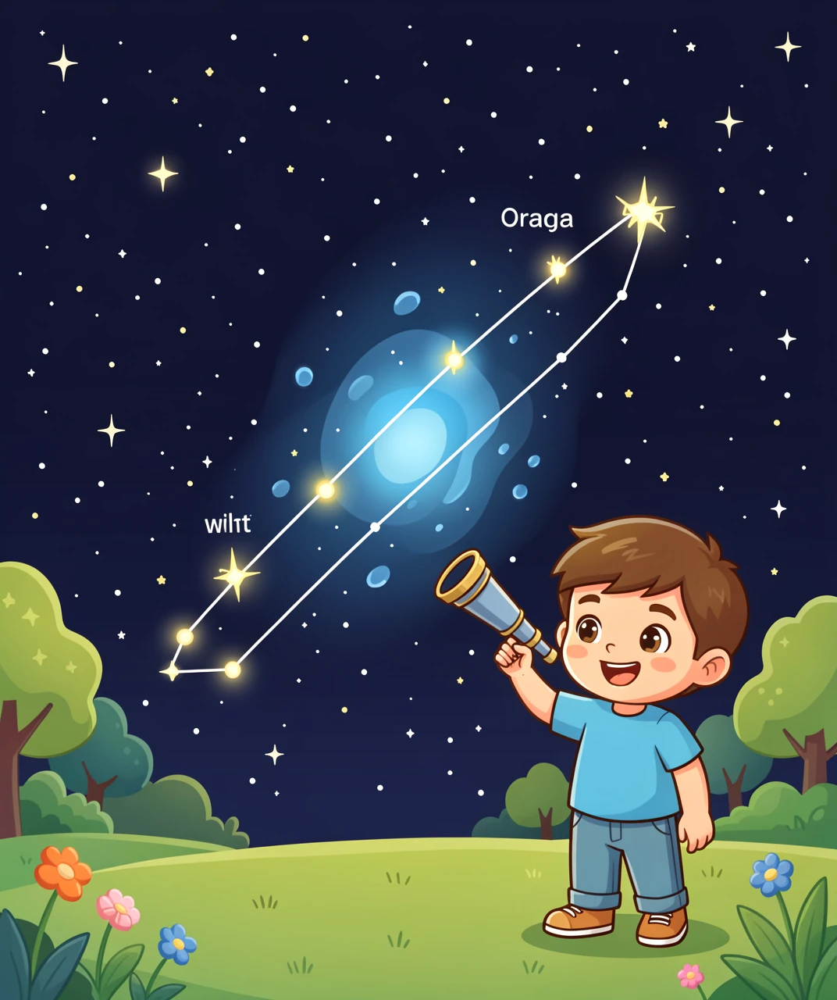
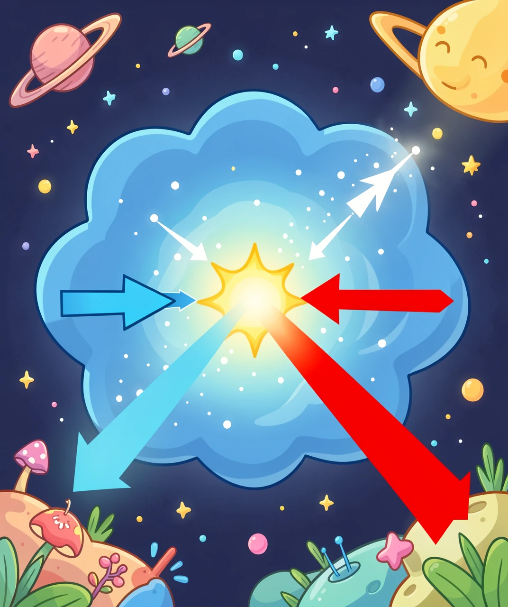
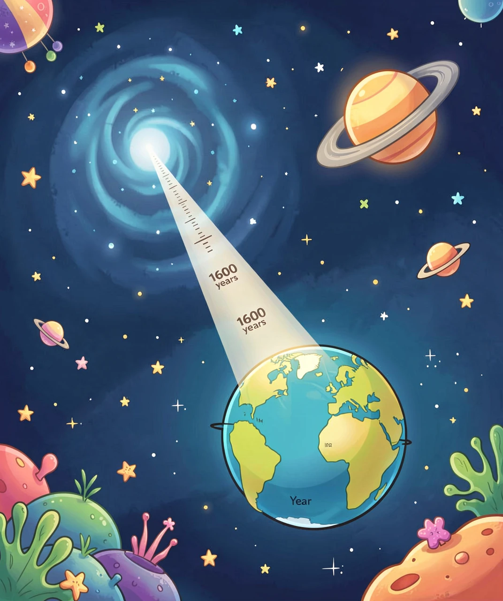

答案是：真的存在。而且它比动画片想象的还要酷。
很多小朋友都知道：奥特曼来自"光之国"，光之国在 M78 星云。
动画片里的东西多半是编出来的。但这一次不一样——M78 星云是真的。它挂在冬天的夜空里，天文学家已经观察它两百多年了。
只不过，真实的 M78 和动画片里的"光之国"，差别大得有点好玩。我们一层一层看下去。

先破解这个名字。M 是一位法国天文学家 梅西耶（Charles Messier）的姓氏首字母。
18 世纪，梅西耶的工作是找彗星。可每次他兴冲冲发现一个"模糊的小云团"，仔细一看都不是彗星——它们根本不动，永远待在同一个位置。烦不胜烦之下，他干脆把这些"假冒彗星"一个个记下来，编成了一份清单，提醒自己和同行：这些不是彗星，别浪费时间。
他一共记了 110 个。
结果历史跟他开了个大玩笑：他真正想找的彗星，今天没几个人记得；而这份"黑名单"，成了全世界天文爱好者最著名的观星目录。今天任何一个天文爱好者，都以拍齐这 110 个天体为荣。
M78 就是这份清单上的第 78 号。它在 1780 年就被发现了——比奥特曼出生整整早了 186 年。
M78 是一团星云——也就是飘在宇宙里的一大团尘埃和气体。
这里有个小朋友很容易误会的地方：M78 自己不会发光。
它的光是"借"来的。在它的内部，藏着几颗刚刚诞生、又大又亮的年轻恒星。这些恒星的光照到周围的尘埃上，被尘埃向四面八方弹开，于是整团云就被照亮了——就像舞台上打开一束灯，你看得见空气里的灰尘。
天文学家管这种"借光发光"的云叫反射星云。

那为什么照片里的 M78 是蓝色的？
答案你其实已经见过一次了——天空为什么是蓝色的，道理是同一套。
光是由不同颜色混起来的，蓝光"波长短"，红光"波长长"。当光撞上特别小的颗粒时，波长短的蓝光更容易被弹开，红光更容易直接穿过去。
所以：白天抬头，大气把阳光里的蓝光弹得满天都是 → 天空是蓝的；傍晚阳光要走很长的路，蓝光早被弹光了，剩下红光 → 夕阳是红的。而在 M78 里，细小的尘埃颗粒把年轻恒星的蓝光优先弹向我们 → 星云看起来就是蓝的。
一句话：M78 的蓝，和天空的蓝，是同一个物理原因。
这才是最精彩的一层。
M78 属于一大片叫猎户座分子云的区域。分子云又冷又密，是宇宙里最适合"造星星"的材料——你可以把它想象成一间巨大的、塞满原料的恒星产房。
在这团云里面，气体和尘埃会因为自身的引力慢慢往一起聚。聚得越紧，中心越热。当中心温度高到大约 一千万度时，氢开始发生核聚变——一颗新的恒星就被点亮了。
M78 里就住着好几颗这样刚点亮不久的"婴儿恒星"。它们还很年轻，周围还裹着没用完的气体和尘埃。有的还在往外喷出两道细细的、速度极快的喷流，就像新生儿挥舞小手。
现在回来想想动画片里的设定——光之国，住着由光构成的巨人。
科学家当然没在那里找到巨人。但他们找到了一件同样了不起的事：那里正在不断制造新的光。一颗又一颗恒星就在那团云里被点亮，把周围的黑暗照亮成蓝色。
从某个角度说，编这个故事的人挑地方挑得真准：M78 确实是一个正在诞生的光之国。
动画片里说，光之国距离地球 300 万光年。真实的 M78 呢？大约 1600 光年。
差了差不多两千倍。但这两个数字要放在一起讲，得先弄明白"光年"是什么。
很多人以为光年是时间单位，其实它是长度单位——光走一年走过的距离。光的速度大约是每秒 30 万公里，一秒钟能绕地球七圈半。让它跑一整年，就是约 9.46 万亿公里。这就是 1 光年。
所以 M78 距离我们 1600 光年，意思是：它发出的光，要在宇宙里跑 1600 年，才能到达我们的眼睛。

这句话有个很重要的后果，很多大人也常常忘掉：
你今晚看到的 M78，是它 1600 年前的样子。
因为光还在路上。我们永远看不到"现在"的宇宙，只能看到"光出发那一刻"的宇宙。每一张星空照片，都是一张老照片。天文学家看越远的东西，就看得越久远——看 1 亿光年外的星系，就是在看 1 亿年前发生的事。
至于动画片里的 300 万光年呢？那是编的。但有个巧合值得想一想：人类这个物种在地球上出现，也才几百万年。如果光之国真在 300 万光年外，那么它今天发出的光要等到 300 万年后才到地球——那时候地球上的"人类"长什么样，谁也不知道。
最后一个实际问题：我能看见 M78 吗？
肉眼不行。M78 太暗了，得用望远镜，而且是那种口径不算小的望远镜，在很黑的地方才看得清。
但它所在的星座非常好认——猎户座，冬天的夜空里最气派的那个。
记住这个找法：猎户座中间有三颗排成一条直线、间距很均匀的亮星，那是他的腰带。M78 就在腰带附近偏北一点点的位置。
其实你先用肉眼看另一个目标更容易：腰带下面挂着的那团"模糊的小雾"，就是 M42 猎户座大星云——那是少数肉眼可见的星云，它跟 M78 是同一片分子云里的"邻居"。在晴朗无月的冬夜抬头，你就能看见它。
所以真正的路线是：先用肉眼找到猎户座和 M42，再借一台望远镜去旁边找 M78。很多天文社团冬天都会架望远镜让大家看这两个目标，问问爸爸妈妈能不能带你去一次观星活动。
1. 虚构可以通向真实。动画里的 M78 是真的，梅西耶编号、猎户座位置、1600 光年、反射星云、恒星产房——全是真的。喜欢一个故事，然后去查它背后有没有真的东西，这是特别好的学习习惯。
2. 先看颜色，再猜原理。天空是蓝的、夕阳是红的、M78 是蓝的——都是"小颗粒更容易弹开蓝光"这一条规律。自然界里很多看起来不相干的现象，底下其实是同一条规则。
3. 你看到的星空，都是过去。8 分钟前的太阳、1600 年前的 M78。看得越远，看得越古老。天文学家其实是宇宙的考古学家。
（答案：1-B 2-C 3-B 4-B 5-C）